); can be evaluated like cFunc.
); can be evaluated like cFunc.
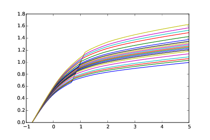
1 Carroll: http://econ.jhu.edu/people/ccarroll/, email: ccarroll@jhu.edu 2 Kaufman: alexander.kaufman@cfpb.gov 3 Low: david.c.low@cfpb.gov 4 Palmer: nathan.m.palmer@ofr.treasury.gov 5 White: mnwecon@udel.edu
If you are willing to risk some mild psychological trauma, conjure to mind your first experience of hand-coding a structural economic model. Your clunky effort probably built on legacy code provided by an adviser or colleague – which itself came from who-knows-what apocryphal sources. Efforts to combine elements from one model with those from another were likely frustrated by the “Tower of Babel” problem: Code from one source could not “speak” to code from another without your own intermediation as a translator, possibly between two unfamiliar languages and aided only by oracular comments that, at best, made sense only in the context of other (now missing) code.
After months of effort, you may have had the character-improving experience of proudly explaining to your adviser that not only had you grafted two ideas together, you also found a trick that speeded the solution by an order of magnitude, only to be told that your breathtaking insight had been understood for many years, as reflected in an appendix to a 2008 paper; or, worse, your discovery was something that “everybody knows” but did not exist at all in published form!
Learning by doing has value, but only within limits. We do not require young drivers to design an internal combustion engine before driving a car, nor must graduate students write their own matrix inversion algorithms before running an OLS regression.
In recent years, considerable progress has been made in addressing these kinds of problems in many areas of economic modeling. Macroeconomists using representative agent models can send Dynare model files to each other; reduced form econometricians can choose from a host of econometric packages. But modelers whose questions require explicit structural modeling involving nontrivial kinds of heterogeneity (that is, heterogeneity that cannot simply be aggregated away) are mostly still stuck in the bad old days.
The ultimate goal of the HARK project is to fix these problems. Specifically, our aim is to produce an open source repository of highly modular, easily interoperable code for solving, simulating, and estimating dynamic economic models with heterogeneous agents.2 Further, we seek to establish (with input from the community) standards for the description and specification of objects like discrete approximations to continuous distributions and interpolated function approximations, so that numeric methods can be quickly swapped without ugly “patching.”
We hope that HARK will make it much easier and faster for researchers to develop solution and estimation methods for new models. The open source nature of HARK will make it easier for other researchers to audit and verify new models and methods, and to collaborate on correcting deficiencies when found. As HARK expands to include more canonical models and more tools and utilities, we can all spend less time managing numerical minutiae and more time fretting about identification arguments and data accuracy.
If you want to get started using HARK right away, this section provides a very easy quickstart guide for getting HARK up and running on your computer in just a few minutes. More information can be found in the README.md file in the HARK repository (step 4), but here is a quick version for those who want to jump right in:
If you followed our recommendation to try /ConsumptionSaving/ConsIndShockModel.py, you should see graphical representations of the solution to a few consumption-saving models with idiosyncratic shocks to permanent and transitory income (see /Documentation/ConsumptionSavingModels.pdf for details of these models). If you chose a different module, you might get some examples of some other model, results of a structural estimation, a polite notification that this particular module doesn’t do much on its own, or no output at all. See the README.md for a full list of modules from which you can expect non-trivial output.
HARK is written in Python, an object-oriented programming (OOP) language that has experienced increasing popularity in the scientific community in the past several years. A significant reason for the adoption of Python is the numpy and scipy packages, which offer a wide array of mathematical and statistical functions and tools; HARK makes liberal use of these libraries. Python’s object-oriented nature allows models in HARK to be easily extended: more complex models can inherit functions and methods from more fundamental “parent” models, eliminating the need to reproduce or repurpose code.
As implied in the previous section, we strongly encourage HARK users to use the Anaconda distribution of Python, which includes all commonly used mathematical and scientific packages, an interactive development environment for iPython (Spyder), and a package manager that allows users to quickly install or update packages not included in the default distribution (conda).
For users unfamiliar with OOP, we strongly encourage you to review the background material
on OOP provided by the good people at QuantEcon (for more on them, see below) at this link:
Object Oriented Programming. Unlike non-OOP languages, OOP bundles together
data and functions into objects. These can be accessed via: object_name.data and
object_name.method_name(), respectively. For organizational purposes, definitions of multiple
objects are stored in modules, which are simply files with a .py extension. Modules can be
accessed in Python via:
import module_name as import_name
This imports the module and gives it a local name of import_name. We can access a function
within this module by simply typing: import_name.function_name(). The following example
will illustrate the usage of these commands. CRRAutility is the function object for calculating
CRRA utility supplied by HARKutilities module. CRRAutility is called attributes of the
module HARKutilities. In order to calculate CRRA utility with a consumption of 1 and a
coefficient of risk aversion of 2 we run:
import HARKutilities as Hutil
Hutil.CRRAutility(1,2)
Python modules in HARK can generally be categorized into three types: tools, models, and applications. Tool modules contain functions and classes with general purpose tools that have no inherent “economic content”, but that can be used in many economic models as building blocks or utilities; they could plausibly be useful in non-economic settings. Tools might include functions for data analysis (e.g. calculating Lorenz shares from data, or constructing a non-parametric kernel regression), functions to create and manipulate discrete approximations to continuous distributions, or classes for constructing interpolated approximations to non-parametric functions. Tool modules generally reside in HARK’s root directory and have names like HARKsimulation and HARKinterpolation; they do not necessarily do anything when run.
Model modules specify particular economic models, including classes to represent agents in the model (and the “market structure” in which they interact) and functions for solving the “one period problem” of those models. For example, ConsIndShockModel.py concerns consumption-saving models in which agents have CRRA utility over consumption and face idiosyncratic shocks to permanent and transitory income. The module includes classes for representing “types” of consumers, along with functions for solving (several flavors of) the one period consumption-saving problem. When run, model modules might demonstrate example specifications of their models, filling in the model parameters with arbitrary values. When ConsIndShockModel.py is run, it specifies an infinite horizon consumer with a particular discount factor, permanent income growth rate, coefficient of relative risk aversion (etc), who faces lognormal shocks to permanent and transitory income each period with a particular standard deviation; it then solves this consumer’s problem and graphically displays the results.4 Model modules generally have Model in their name.
Application modules use tool and model modules to solve, simulate, and/or estimate economic models for a particular purpose. While tool modules have no particular economic content and model modules describe entire classes of economic models, applications are uses of a model for some research purpose. For example, /SolvingMicroDSOPs/StructEstimation.py uses a consumption-saving model from ConsIndShockModel.py, calibrating it with age-dependent sequences of permanent income growth, survival probabilities, and the standard deviation of income shocks (etc); it then estimates the coefficient of relative risk aversion and shifter for an age-varying sequence of discount factors that best fits simulated wealth profiles to empirical data from the Survey of Consumer Finance. A particular application might have multiple modules associated with it, all of which generally reside in one directory.
In the incredibly unlikely scenario in which this document does not fill all of the gaps in your knowledge and answer any questions you might have while reading it, here is a collection of potentially helpful other resources.
HARK’s root directory contains six tool modules,5 each containing a variety of functions and classes that can be used in many economic models– or even for mathematical purposes that have nothing to do with economics. Some of the tool modules are very sparely populated at this time, while others are quite large. We expect that all of these modules will grow considerably in the near future, as new tools are “low hanging fruit” for contribution to the project.6
A key goal of the project is to create modularity and interoperability between models, making them easy to combine, adapt, and extend. To this end, the HARKcore module specifies a framework for economic models in HARK, creating a common structure for them on two levels that can be called “microeconomic” and “macroeconomic”.
Microeconomic models in HARK use the AgentType class to represent agents with an intertemporal optimization problem. Each of these models specifies a subclass of AgentType; an instance of the subclass represents agents who are ex-ante homogeneous– they have common values for all parameters that describe the problem. For example, ConsIndShockModel specifies the IndShockConsumerType class, which has methods specific to consumption-saving models with idiosyncratic shocks to income; an instance of the class might represent all consumers who have a CRRA of 3, discount factor of 0.98, etc. The AgentType class has a solve method that acts as a “universal microeconomic solver” for any properly formatted model, making it easier to set up a new model and to combine elements from different models; the solver is intended to encompass any model that can be framed as a sequence of one period problems. For a complete description, see section 3.
Macroeconomic models in HARK use the Market class to represent a market (or other aggregator) that combines the actions, states, and/or shocks (generally, outcomes) of individual agents in the model into aggregate outcomes that are “passed back” to the agents. For example, the market in a consumption-saving model might combine the individual asset holdings of all agents in the market to generate aggregate capital in the economy, yielding the interest rate on assets (as the marginal product of capital); the individual agents then learn the aggregate capital level and interest rate, conditioning their next action on this information. Objects that microeconomic agents treat as exogenous when solving (or simulating) their model are thus endogenous at the macroeconomic level. Like AgentType, the Market class also has a solve method, which seeks out a dynamic general equilibrium: a “rule” governing the dynamic evolution of macroeconomic objects such that if agents believe this rule and act accordingly, then their collective actions generate a sequence of macroeconomic outcomes that justify the belief in that rule. For a more complete description, see section 4.
Beyond the model frameworks, HARKcore also defines a “supersuperclass” called HARKobject. When solving a dynamic microeconomic model with an infinite horizon (or searching for a dynamic general equilibrium), it is often required to consider whether two solutions are sufficiently close to each other to warrant stopping the process (i.e. approximate convergence). It is thus necessary to calculate the “distance” between two solutions, so HARK specifies that classes should have a distance method that takes a single input and returns a non-negative value representing the (generally dimensionless) distance between the object in question and the input to the method. As a convenient default, HARKobject provides a “universal distance metric” that should be useful in many contexts.7 When defining a new subclass of HARKobject, the user simply defines the attribute distance_criteria as a list of strings naming the attributes of the class that should be compared when calculating the distance between two instances of that class. For example, the class ConsumerSolution has distance_criteria = [’cFunc’], indicating that only the consumption function attribute of the solution matters when comparing the distance between two instances of ConsumerSolution. See here for online documentation.
The HARKutilities module carries a double meaning in its name, as it contains both utility functions (and their derivatives, inverses, and combinations thereof) in the economic modeling sense as well as utilities in the sense of general tools. Utility functions included at this time are constant relative risk aversion and constant absolute risk aversion. Other functions in HARKutilities include some data manipulation tools (e.g. for calculating an average of data conditional on being within a percentile range of different data), functions for constructing discrete state space grids, convenience functions for retrieving information about functions, and basic plotting tools using matplotlib.pyplot.
The module also includes functions for constructing discrete approximations to continuous distributions (e.g. approxLognormal() to approximate a log-normal distribution) as well as manipulating these representations (e.g. appending one outcome to an existing distribution, or combining independent univariate distributions into one multivariate distribution). As a convention in HARK, continuous distributions are approximated as finite discrete distributions when solving models; an 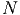-dimensional random variable is formatted as a length 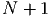 list of 1D arrays, with the first element representing event probabilities and all other elements are realizations of the 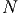 component RVs. This both simplifies solution methods (reducing numeric integrals to simple dot products) and allows users to easily test whether their chosen degree of discretization yields a sufficient approximation to the full distribution. See here for online documentation.
The HARKinterpolation module defines classes for representing interpolated function approximations. Interpolation methods in HARK all inherit from a superclass such as HARKinterpolator1D or HARKinterpolator2D, wrapper classes that ensures interoperability across interpolation methods. For example, HARKinterpolator1D specifies the methods __call__ and derivative to accept an arbitrary array as an input and return an identically shaped array with the interpolated function evaluated at the values in the array or its first derivative, respectively. However, these methods do little on their own, merely reshaping arrays and referring to the _evaluate and _der methods, which are not actually defined in HARKinterpolator1D. Each subclass of HARKinterpolator1D specifies their own implementation of _evaluate and _der particular to that interpolation method, accepting and returning only 1D arrays. In this way, subclasses of HARKinterpolator1D are easily interchangeable with each other, as all methods that the user interacts with are identical, varying only by “internal” methods.
When evaluating a stopping criterion for an infinite horizon problem, it is often necessary to know the “distance” between functions generated by successive iterations of a solution procedure. To this end, each interpolator class in HARK must define a distance method that takes as an input another instance of the same class and returns a non-negative real number representing the “distance” between the two. As each of the HARKinterpolatorXD classes inherits from HARKobject, all interpolator classes have the default “universal” distance method; the user must simply list the names of the relevant attributes in the attribute distance_criteria of the class.
Interpolation methods currently implemented in HARK include (multi)linear interpolation up to 4D, 1D cubic spline interpolation, (multi)linear interpolation over 1D interpolations (up to 4D total), (multi)linear interpolation over 2D interpolations (up to 4D total), linear interpolation over 3D interpolations, 2D curvilinear interpolation over irregular grids, and a 1D “lower envelope” interpolator. See here for online documentation.
The HARKsimulation module provides tools for generating simulated data or shocks for post-solution use of models. Currently implemented distributions include normal, lognormal, Weibull (including exponential), uniform, Bernoulli, and discrete. As an example of their use, these tools are used in the consumption-saving models of ConsIndShockModel.py to simulate permanent and transitory income shocks as well as unemployment events. See here for online documentation.
Methods for optimizing an objective function for the purposes of estimating a model can be found in HARKestimation. As of this writing, the implementation includes only minimization by the Nelder-Mead simplex method, minimization by a derivative-free Powell method variant, and two small tools for resampling data (i.e. for a bootstrap); the minimizers are merely convenience wrappers (with result reporting) for optimizers included in scipy.optimize. Future functionality will include more robust global search methods, including genetic algorithms, simulated annealing, and differential evolution. See here for full documentation.
By default, processes in Python are single-threaded, using only a single CPU core. The HARKparallel module provides basic tools for using multiple CPU cores simultaneously, with minimal effort.8 In particular, it provides the function multiThreadCommands, which takes two arguments: a list of AgentTypes and a list of commands as strings; each command should be a method of the AgentTypes. The function simply distributes the AgentTypes across threads on different cores and executes each command in order, returning no output (the AgentTypes themselves are changed by running the commands). Equivalent results would be achieved by simply looping over each type and running each method in the list. Indeed, HARKparallel also has a function called multiThreadCommandsFake that does just that, with identical syntax to multiThreadCommands; multithreading in HARK can thus be easily turned on and off.9 The module also has functions for a parallel implementation of the Nelder-Mead simplex algorithm, as described in Wiswall and Lee (2011). See here for full documentation.
The core of our microeconomic dynamic optimization framework is a flexible object-oriented representation of economic agents. The HARKcore module defines a superclass called AgentType; each model defines a subclass of AgentType, specifying additional model-specific features and methods while inheriting the methods of the superclass. Most importantly, the method solve acts as a “universal solver” applicable to any (properly formatted) discrete time model. This section describes the format of an instance of AgentType as it defines a dynamic microeconomic problem;10
A discrete time model in our framework is characterized by a sequence of “periods” that the agent will experience. A well-formed instance of AgentType includes the following attributes:
An instance of AgentType also has the attributes named in time_vary and time_inv, and may have other attributes that are not included in either (e.g. values not used in the model solution, but instead to construct objects used in the solution).
When an instance of AgentType invokes its solve method, the solution to the agent’s problem is stored in the attribute solution. The solution is computed by recursively solving the sequence of periods defined by the variables listed in time_vary and time_inv using the functions in solveOnePeriod. The time-varying inputs are updated each period, including the successive period’s solution as solution_next; the same values of time invariant inputs in time_inv are passed to the solver in every period. The first call to solveOnePeriod uses solution_terminal as solution_next. In a finite horizon problem, the sequence of periods is solved cycles times over; in an infinite horizon problem, the sequence of periods is solved until the solutions of successive cycles have a “distance” of less than tolerance.
The output from a function in solveOnePeriod is an instance of a model-specific solution class. The attributes of a solution to one period of a problem might include behavioral functions, (marginal) value functions, and other variables characterizing the result. Each solution class must have a method called distance(), which returns the “distance” between itself and another instance of the same solution class, so as to define convergence as a stopping criterion; for many models, this will be the “distance” between a policy or value function in the solutions. If the solution class is defined as a subclass of HARKobject, it automatically inherits the default distance method, so that the user must only list the relevant object attributes in distance_criteria.
The AgentType also has methods named preSolve and postSolve, both of which take no arguments and do absolutely nothing. A subclass of AgentType can overwrite these blank methods with its own model specific methods. preSolve is automatically called near the beginning of the solve method, before solving the sequence of periods. It is used for specifying tasks that should be done before solving the sequence of periods, such as pre-constructing some objects repeatedly used by the solution method or finding an analytical terminal period solution. For example, the IndShockConsumerType class in ConsIndShockModel has a preSolve method that calls its updateSolutionTerminal method to ensure that solution_terminal is consistent with the model parameters. The postSolve method is called shortly after the sequence of periods is fully solved; it can be used for “post-processing” of the solution or performing a step that is only useful after solution convergence. For example, the TractableConsumerType in TractableBufferStockModel has a postSolve method that constructs an interpolated consumption function from the list of stable arm points found during solution.
Our universal solver is written in a very general way that should be applicable to any discrete time optimization problem– because Python is so flexible in defining objects, the time-varying inputs for each period can take any form. Indeed, the solver does no “real work” itself, but merely provides a structure for describing models in the HARK framework, allowing interoperability among current and future modules.
Because dynamic optimization problems are solved recursively in our framework, it is natural to list time-varying values in reverse chronological order– the solve() method loops over the values in each time-varying list in the same direction that a human would read them. When simulating agents after the solution has been obtained, however, it is much more convenient for time-varying parameters to be listed in ordinary chronological order– the direction in which they will be experienced by simulated agents. To allow the user to set the order in which “time is flowing” for an instance of AgentType, the HARK framework includes functionality to easily change ordering of time-varying values.
The attribute time_flow is True if variables are listed in ordinary chronological order and False otherwise. AgentType has the following methods for manipulating time:
These methods are invoked to more conveniently access time-varying objects. When a new time-varying attribute is added, its name should be appended to time_vary, particularly if its values are used in the solution of the model (or is part of the solution itself). For example, the solve() method automatically adds the string ’solution’ to time_vary if it is not already present. Note that attributes listed in time_vary must be lists if solve() or timeFlip() are used. Some values that could be considered “time varying” but are never used to solve the model are more conveniently represented as a numpy.array object (e.g. the history of a state or control variable from a simulation); because the numpy.array class does not have a reverse() method, these attributes should not be listed in time_vary.
The base AgentType is sparsely defined, as most “real” methods will be application-specific. Two final methods bear mentioning. First, the __call__ method points to assignParameters(), a convenience method for adding or adjusting attributes (inherited from HARKobject). This method takes any number of keyword arguments, so that code can be parsimoniously written as, for example, AgentInstance(attribute1 = value1, attribute2 = value2). Using Python’s dictionary capabilities, many attributes can be conveniently set with minimal code. Second, the resetRNG method simply resets the AgentType’s random number generator (as the attribute RNG) using the value in the attribute seed.12 This method is useful for (inter alia) ensuring that the same underlying sequence of shocks is used for every simulation run when a model is solved or estimated.
To provide a concrete example of how the AgentType class works, consider the very simple case of a perfect foresight consumption-saving model. The agent has time-separable, additive CRRA preferences over consumption, discounting future utility at a constant rate; he receives a particular stream of labor income each period, and knows the interest rate on assets that he holds from one period to the next. His decision about how much to consume in a particular period can be expressed in Bellman form as:
The ConsIndShockModel module defines the class PerfForesightConsumerType as a subclass of AgentType and provides solver functions for several variations of a consumption-saving model, including the perfect foresight problem.13 A HARK user could specify and solve a ten period perfect foresight model with the following commands:
MyConsumer = PerfForesightConsumerType(time_flow=True, cycles=1,
CRRA = 2.7, Rfree = 1.03, DiscFac = 0.98,
LivPrb = [0.99,0.98,0.97,0.96,0.95,0.94,0.93,0.92,0.91,0.90],
PermGroFac = [1.01,1.01,1.01,1.01,1.01,1.02,1.02,1.02,1.02,1.02],
Nagents=1000)
MyConsumer.solve()
The first line makes a new instance of ConsumerType, specifying that time is currently “flowing” forward14 and that the sequence of periods happens exactly once; the next three lines (all part of the same command) set the time invariant (CRRA, Rfree, DiscFac) and time varying parameters (LivPrb, PermGroFac). Note that dir(MyConsumer) shows all the attributes of MyConsumer. After running the solve method, MyConsumer will have an attribute called solution, which will be a list with eleven ConsumerSolution objects, representing the period-by-period solution to the model.15 Each ConsumerSolution has several attributes:
); can be evaluated like cFunc.
The following command generates the plot for the perfect foresight consumption function:
mMin = MyConsumer.solution[0].mNrmMin
plotFuncs(MyConsumer.solution[0].cFunc, mMin, mMin+10)
To solve a version of this problem in which the sequence of ten periods happens three times (yielding a solution attribute with thirty-one elements), the user can do:
MyConsumer(cycles = 3)
MyConsumer.solve()
To solve an infinite horizon problem in which the agent experiences the same one period problem indefinitely, the user can do:
OtherConsumer = PerfForesightConsumerType(cycles=0, CRRA=3.5, Rfree=1.02,
DiscFac=0.95, LivPrb = [0.99], PermGroFac = [1.01], Nagents=1000)
OtherConsumer.solve()
This instance is specified as being infinite horizon by setting cycles=0. Note that the time-varying inputs are still specified as (one element) lists, even though they take on the same value in every period; this is because an infinite horizon model might consist of a multi-period sequence repeated indefinitely, rather than just one repeated period. The solution attribute of OtherConsumer will be a list containing one instance of ConsumerSolution, representing the solution to every period of the model.
The modeling framework of AgentType is deemed “microeconomic” because it pertains only to the dynamic optimization problem of agents, treating all inputs of the problem as exogenously fixed. In what we label as “macroeconomic” models, some of the inputs for the microeconomic models are endogenously determined by the collective states and controls of agents in the model. In a dynamic general equilibrium, there must be consistency between agents’ beliefs about these macroeconomic objects, their individual behavior, and the realizations of the macroeconomic objects that result from individual choices.
The Market class in HARKcore provides a framework for such macroeconomic models, with a solve method that searches for a dynamic general equilibrium. An instance of Market includes a list of AgentTypes that compose the economy, a method for transforming microeconomic outcomes (states, controls, and/or shocks) into macroeconomic outcomes, and a method for interpreting a history or sequence of macroeconomic outcomes into a new “dynamic rule” for agents to believe. Agents treat the dynamic rule as an input to their microeconomic problem, conditioning their optimal policy functions on it. A dynamic general equilibrium is a fixed point dynamic rule: when agents act optimally while believing the equilibrium rule, their individual actions generate a macroeconomic history consistent with the equilibrium rule.
The Market class uses a farming metaphor to conceptualize the process for generating a history of macroeconomic outcomes in a model. Suppose all AgentTypes in the economy believe in some dynamic rule (i.e. the rule is stored as attributes of each AgentType, which directly or indirectly enters their dynamic optimization problem), and that they have each found the solution to their microeconomic model using their solve method. Further, the macroeconomic and microeconomic states have been reset to some initial orientation.
To generate a history of macroeconomic outcomes, the Market repeatedly loops over the following steps a set number of times:
This procedure is conducted by the makeHistory method of Market as a subroutine of its solve method. After making histories of the relevant macroeconomic variables, the market then executes its calcDynamics function with the macroeconomic history as inputs, generating a new dynamic rule to distribute to the AgentTypes in the market. The process then begins again, with the agents solving their updated microeconomic models given the new dynamic rule; the solve loop continues until the “distance” between successive dynamic rules is sufficiently small.
To specify a complete instance of Market, the user should give it the following attributes:16
Further, each AgentType in agents must have two methods not necessary for microeconomic models; neither takes any input (except self):
When solving macroeconomic models in HARK, the user should also define classes to represent the output from the aggregate market process in millRule and for the model-specific dynamic rule. The latter should have a distance method to test for solution convergence; if the class inherits from HARKobject, the user need only list relevant attributes in distance_criteria.
To illustrate the Market class, consider a simple example in the emerging economic subfield of aesthemetrics, the FashionVictimModel.17 18 This module defines a subclass of AgentType called FashionVictimType. Each period, fashion victims make a binary choice of style : to dress as a jock (0) or punk (1). They receive utility directly from the outfit they wear and as a function of the proportion of the population who just wore the same style; they also pay switching costs (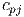,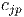) if they change styles rather than keep the same as the previous period. Moreover, they receive an idiosyncratic type 1 extreme value (T1EV) preference shock to each style in each period. Defining the population punk proportion as 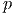 and the conformity utility function as 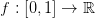, the current period utility function is thus:
|
|
Fashion victims are forward looking and discount future utility at a constant rate of 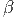 per period. To simplify the analysis, we assume they believe that the population punk proportion in the next period is a linear function of the punk proportion in the current period, subject to a uniformly distributed shock. No restrictions are put on the function 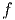; fashion victims might be conformists who like to dress the same as others (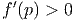) or hipsters who like to style themselves in the minority (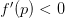).19 A fashion victim’s problem can be written in Bellman form as:
|
|
|
|
An instance of FashionVictimType is thus characterized by values of 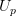, 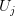, 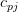, 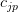 and a function , as well as beliefs about 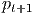 as a function of 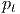 (summarized by slope , intercept , and uniform shock width 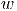). Given this information, a FashionVictimType’s infinite horizon microeconomic model can be solved by backward induction in a few lines; the “one period solver” is given by solveFashion. However, while individual agents treat the dynamics of 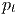 as exogenous, they are in fact endogenously determined by the actions of all the fashion victims in the market.20 A dynamic general equilibrium of the “macroeconomic fashion model” is thus characterized by a triple of 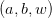 such that when fashion victims believe in this “punk evolution rule” and act optimally, their collective fashion choices exhibit this same rule when the model is simulated.
The search for a dynamic general equilibrium is implemented in HARK’s Market class with the following definitions:
sow_vars = [’pNow’] (macroeconomic outcome is )
reap_vars = [’sNow’] (microeconomic outcomes are 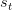 for many agents)
track_vars = [’pNow’] (must track history of 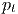)
dyn_vars = [’pNextSlope’,’pNextIntercept’,’pNextWidth’] (dynamic rule 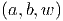)
millRule = calcPunkProp (aggregate process: average the style choices of all agents)
calcDynamics = calcFashionEvoFunc (calculate new 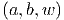 with autoregression of 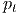)
act_T = 1000 (simulate 1000 periods of the fashion market)
tolerance = 0.01 (terminate solution when  changes by less than 0.01)
changes by less than 0.01)
The agents attribute has a list of 22 FashionVictimTypes, which vary in their values of 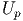 and 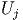, and their 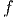 functions. The marketAction method of FashionVictimType simulates one period of the microeconomic model: each agent receives style preference shocks 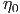 and 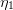, sees the current proportion of punks (sown to them as pNow), and chooses which style to wear, storing it in the binary array sNow, an attribute of self.
The millRule for this market is extremely simple: it flattens the list of binary arrays of individual style choices (gathered in the reap step) and averages them into a new value of , to be tracked as a history and sown back to the agents to begin the cycle again. Once a history of 1000 values of 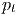 has been generated with the makeHistory method, we can calculate a new dynamic fashion rule with calcFashionEvoFunc by regressing on 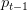, approximating as twice the standard deviation of prediction errors.21 The new fashion rule is an instance of the simple FashionEvoFunc class, whose only methods are inherited from HARKobject.
When the solve method is run, the solver successively solves each agent’s microeconomic problem, runs the makeHistory method to generate a 1000 period history of 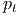, and calculates a new punk evolution rule based on this history; the solver terminates when consecutive rules differ by less than 0.01 in any dimension.
This section provides an overview of how users can contribute new code to HARK, what sort of contributions are most desired, and style conventions for the toolKit. Before attempting to extend HARK, we strongly recommend that you familiarize yourself with its features and models by looking at the source code.
The easiest and most straightforward way to contribute to HARK is by writing new general purpose tools for inclusion in one of the top-level modules. This might be a commonly known data analysis technique (e.g. a kernel density estimator) for HARKutilities, an optimization method (local or global) for HARKestimation, an interpolation method for HARKinterpolation, etc. If you’ve found a technique useful in your own research and believe it could be of use to others on entirely different projects, then it probably belongs in HARK. Likewise, if you read through a HARK module expecting to find a certain tool or function (because of similar functions that are present, or merely because it’s very useful) but don’t, this is a good sign that HARK has a hole that you can fill.22
Secondly, the development team wants to expand HARK to include more canonical models. Most of the models available in the toolKit at the time of its public beta release concern agents with (geometrically discounted) CRRA utility over a unitary consumption good, who receive permanent and transitory shocks to income and have access to a single risk free asset. This is an important class of models, but that description has an awful lot of qualifiers. In short, there are many more common features of dynamic household models that are not yet in HARK, but would be very valuable for the toolKit. New model contributions should “play nicely” with existing models and tools, following HARK style guidelines (see sections 5.4 and 5.5) to the greatest extent possible. For ideas of potential model extensions for HARK, see section 6.2.23
Finally, contributions to HARK are not restricted to entirely new functionality. While we have done our best to provide flexible frameworks and useful tools, we have almost certainly overlooked an unexpected case that would not be (properly) handled by the toolKit as is. Moreover, there might even be flaws in our solution or simulation methods. If you find a mistake or error, we strongly encourage you to contribute a fix for the problem, or at least to flag it as an Issue on GitHub so that someone else might. The “mistake” you find might not even be in the code itself, but a deficiency in the documentation: a misnamed (or incorrectly typed) parameter or return variable in the docstring, an incorrect (or missing) comment, even a grammatical or spelling error. No matter how niggling, we want your fix.
For those who want to contribute to the HARK project without programming a new model or digging through the code for errors and omissions, consider reading through the Issues page on GitHub to see what other users have flagged for development. You might find several pieces of “low hanging fruit” for you to quickly fix.
Git is a distributed version control system that has gained increasing popularity in the decade since its creation; it is designed to enable collaboration and “non-linear workflow” among a (potentially disperse) programming team. As HARK is to be developed by volunteer researchers all around the world, git is an excellent fit for the toolKit. Originally designed by Linus Torvalds as a command line tool, others have since extended git with further functionality and a user interface more friendly to those more familiar with GUIs. Foremost among these tools is GitHub.com, where the HARK project is hosted. This section provides a brief overview of how to use GitHub to interact with (and potentially contribute to) HARK.
To prepare to contribute to HARK, follow these simple steps:
You now control a “fork” of the main HARK repository, hosted by GitHub, and have a clone of this fork on your local machine. You are free to edit your fork of HARK in any way you’d like; other GitHub users can view your fork (and fork it themselves), but they cannot make changes to your fork unless you give them permission by adding them as a contributor. Changes made to the local copy of your fork do not get automatically sent to the remote copy on GitHub for public viewing. To make changes to your fork on GitHub, follow these steps:
The left hand panel of the Changes tab has a summary of the files that have been changed, added, or removed since your last commit; the right hand panel shows the specific changes made to each changed file. After step 2, a record of your changes has been stored locally by the git system, but is not yet reflected in the public remote copy on GitHub.25 The “timeline” summary of the repository at the top of the Desktop window shows the history of commits for the repository: each dot represents a commit that was pushed to the remote server, and each open ring represents a local commit that has not been pushed to the remote server; the large broken ring on the far right represents changes that have not been locally committed.26 The History tab lists all previous commits, including the timestamp, contributor, and a record of changes made.
Suppose you have mucked about in your fork for a while and have made changes to HARK that you think should be included in the main repository hosted by Econ-Ark. To make your dream a reality, follow these steps:
Before submitting to HARK, the development team would like you to make sure that your intended contribution is listed as an Issue on the GitHub page. If you are going to fix or address an Issue that is already posted, reply to that post with a note indicating that you are about to work on it and an estimate of when you will make a pull request for it. If you want to do something that no one has mentioned yet as an Issue, make a new Issue on GitHub (briefly) describing what you intend to do.28 This will both help prevent two people from working on the same thing (and one of them potentially wasting time on it), and lets the development team know what’s coming. Moreover, if you propose a contribution that is (a) already in HARK, (b) not in the spirit of HARK, or (c) a fix for something that’s not actually broken, this gives the team a chance to let you know not to spend effort on it.
After creating a pull request to submit your contribution, it will be evaluated by one or more members of the HARK team. Criteria that the HARK team will consider when choosing whether to accept a submission include:
The HARK team intends to release more specific guidelines in the near future, so that contributors are better able to judge their submissions before issuing a pull request. We are in the process of recruiting “czars” to oversee particular aspects of HARK, providing their knowledge and expertise.30 While czars might directly evaluate submissions as a HARK team member, their more important role is to help establish these guidelines for their domain, more specifically nailing down what we mean by “correct” or “well integrated”.
Object naming conventions in HARK are fairly different than existing standards, and differ somewhat between tool modules vs model or application modules. The following conventions apply throughout HARK:
When naming variables in model modules, the HARK team strongly discourages using single letter names, like c for consumption. Instead, we encourage contributors to use longer, more descriptive variable names using additional words and common abbreviations to specify the variable more precisely. In /Documentation/NARK.pdf, we list standard single letter variable “bases” and an array of prefixes and suffixes to adjust them. Economic variables in model modules should (usually) not use underscores, instead using camel case to the greatest extent possible.32 The development team prefers this standard so that users can translate between Python code and LaTeX script with minimal work.
Conventions for naming variables in HARK’s tool modules are significantly closer to more commonly used standards. Variable names should be in all lower case, with underscores between words, e.g. data_to_match. The functions and classes in these modules are more general and almost surely do not have any inherent “economic content”; they are numerical or algorithmic objects, not variables that might appear in an equation in an article for a (non-computational) economics journal. Variable names in application modules (e.g. the files that execute the cstwMPC estimations) are a mix of the conventions for tool and model files, as appropriate for each variable. That is, variables that are directly related to “economic variables” in model modules should follow those conventions, while objects created solely for data manipulation or reporting should use the style of tool modules.
The HARK team wants the toolKit to be as accessible to users as possible; our greatest fear33 is that a new user will open up our code, get hopelessly confused trying to read it, and then never look at HARK again. To prevent this tragic outcome, we have tried hard to provide comprehensive, accurate documentation and comments within the code describing our methods.34 Moreover, HARK uses the Sphinx utility to generate a website with online documentation for all of our tool and model modules, so that users can learn about what’s available in HARK without digging through the source code. When making contributions to HARK, the development team asks users to format their inline documentation to work with Sphinx by following a few simple rules.
"""
Specifies an economic model and provides methods for solving it. More specific description of the key features of the model and variations of it in this module. Maybe some comments about the solution method or limitations of the model. Your bank account routing number.
"""
def functionName(input1,input2):
"""
Concise description of the function. More details about what
the function does, options or modes available, and maybe mathematical
methods used. Credit to a source if you poached their algorithm.
Parameters
––––––––––
input1: type
Description of what input1 represents.
input2: type
Description of what input2 represents.
Returns
–––––––
output_name: type
Description of the output(s) of the function. Might have
multiple entries. If no output, this is just "None".
"""
Finally, if you write a new model module, the HARK team asks that you also provide a short mathematical writeup of the model as a PDF. This document does not need to go into great detail about the solution method for the model or the functions and classes included in the module, merely specify the economic model and provide a summary of how it is solved. See /Documentation/ConsumptionSavingModels.pdf for an example of this.
HARK is in a state of perpetual incompleteness, always expanding to include more tools and more models. As an open source project in the hands of many contributors around the world, the HARK team cannot fully predict future features of the toolKit. This section provides an overview of what we would like to see in the near future, as well as potential mechanisms to encourage researchers to contribute their code to the project.
The current frameworks in HARKcore concern agents who have “isolated” dynamic problems or interact with each other only through aggregate outcomes to which they contribute atomically. We hope to eventually provide a framework for models in which agents directly interact with each other; this may include a system for specifying the state of networks and how connections are formed and broken. HARKcore might also develop a framework more suited to industrial organization models and dynamic games.36
The HARKestimation module in particular is very sparsely populated, with its functions mostly serving as wrappers for “off the shelf” optimization methods from scipy.optimize. There are plenty of non-standard or more complex optimization techniques available, including global and/or stochastic search methods. We believe that additional optimizers are “low hanging fruit” as straightforward contributions to HARK and thus will be added in the near future. Moreover, there are plenty of distributions that have no approximator in HARKutilities (or data generator in HARKsimulation), and these functions are among the easiest for new contributors to write. The data analysis tools in HARKutilities only include functions that we happened to use for our current research projects, and we expect that this will be the mode of growth for future tools. There are some obvious holes that we believe will be filled quite quickly; for example, we provide a rudimentary non-parametric kernel regression function, but have not written a kernel density estimator to generate PDFs from data.
The classes currently in HARKinterpolation are all variations on linear (or cubic) spline interpolation, and each is specifically written for a fixed number of dimensions. As these methods use full tensor grids, they are highly impractical for representing functions in higher dimensions, suffering greatly from the curse of dimensionality.37 We are quite confident that HARKinterpolation will soon include techniques more applicable to high dimensional state spaces, including Smolnyak interpolation, other (adaptive) sparse grid methods, and regression-based interpolation. For lower-dimensional spaces, HARK will also soon provide Delaunay interpolation classes.
The HARKparallel module currently provides a simple interface for handling ex-ante heterogeneity among agents. While useful for speeding up moderately-sized problems, the libraries used are only able to access the CPU of the local machine running the code. In the very near future, the HARK team will provide an interface (and example) for using Apache Spark, which bills itself as a “fast and general engine for large-scale data processing”. Specifically, users will be able to easily scale up their computing resources and run HARK code on an Amazon EC2 session or other cluster.
The economics models currently included in HARK mostly concern consumption-saving problems with constant relative risk aversion consumers who experience fully permanent and fully transitory shocks to income. This is obviously a very small subset of all consumption-saving models (which are themselves a small subset of all dynamic models economists might be interested in). Consider some examples of variants, features, and extensions that are not included in HARK, but could be in the future:
The HARK team is currently developing a module for mixing discrete and continuous choice models, in the style of Jorgensen, Rust, Iskhakov, and Schjerning (2015). Among many other models, this framework will enable HARK users to easily develop features like:
Finally, we hope to provide a generic solver for any discrete choice model with T1EV shocks. The scope of HARK is limited only by what users choose to put in it. We hope that within a year of its debut, HARK will include a significant number of canonical models, providing more building blocks for future researchers to create novel combinations and new extensions.
While HARK users are free to write and contribute any tools and models that they believe could be helpful, building the toolKit in a “bottom up” style, the HARK team hopes to provide mechanisms for targeted “top down” development. The team is working to secure grant funding for HARK so as to offer “bounties” for particular models, tools, applications, or frameworks. Suppose the team decides that the model in Important Paper X should be included as part of HARK; we will issue a call for contributions to fill this hole, offering a modest prize of, say, $20,000 to the programmer who submits the best implementation of the model, as judged by clearly stated criteria.38 The bounty would be announced as an Issue on HARK’s GitHub page, as well as in a potential electronic digest of HARK news.
Bounties might be placed on items as small as a single data analysis tool or as large as a complex estimation of a large general equilibrium model, with prizes scaling accordingly. We hasten to emphasize that we cannot guarantee funding for HARK, so the bounties (like everything else in this section) are purely speculative. As economists, the HARK team understands the incentive compatibility problems associated with asking researchers to contribute significant amounts of their time, effort, and unique skills in service of a tenuous concept like the Greater Good in exchange for even more tenuous Glory. We acknowledge that economic researchers are also optimizing agents with their own preferences over leisure and consumption, and agree that Greed is a valid mechanism to expand HARK.
As observant readers may have noticed, the HARK repository is hosted by a GitHub account named Econ-Ark, with no explanation as to what this might mean. Looking a few years into the future, the development team believes that HARK might be the first piece of a broader collection of computational economics resources. HARK is open source but somewhat akin to an exclusive club: contributions are required to adhere to standards and norms so as to foster modularity and interoperability among models and tools. Consistent with its namesake ship, the Econ-Ark has a significantly lower bar for admission, with a place on board for everything.
On one level, the Ark might serve as a warehouse for any and all quantitative models and tools, for any economic purpose, in any subfield, and written in any language. Through nearly unanimous feedback, the HARK team understands that many economists are willing to share code that they have already written, but are reluctant to expend the considerable effort to translate and format it for HARK. In the future, we will set up a mechanism for code like this to be hosted on the Ark, with minimal requirements imposed on its authors (and correspondingly minimal warranty for potential users). Relevant projects on the Ark might become bounty targets for HARK, with users incentivized to port the original code into Python and to meet HARK standards; direct access to the original source code will significantly expedite the translation process, and provide a suitable benchmark for testing and verifying the contribution to HARK.
On a different level, the Ark might also include cohesive toolkits like HARK, but geared toward purposes other than heterogeneous agents macroeconomics models. For example, the previously mentioned modules for networks among agents (and other agent-based modeling), industrial organization and dynamic games, and traditional discrete choice models might become their own toolkits, with some interoperability with HARK. In support of this, some of the tool modules currently in HARK might be “promoted” and become universally shared across all Econ-Ark toolkits.
The dark secret of HARK is that it is named for heterogeneous agents macroeconomics, but designed and written by structural microeconomists. The development team believes these subfields to have considerable overlap in terms of methods and techniques, and that HARK might not be noticed by half of its potential audience due to its name. In a general sense, the Econ-Ark gives us cover to expand the scope of our efforts and/or rebrand the toolKit for an alternative audience.